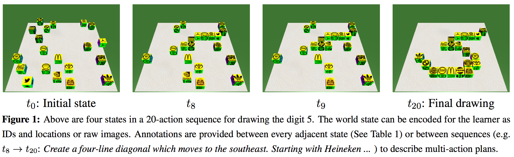

BLOCKS Data Set |
|
|
|  |
|
Data
All data takes the form of Problem-Solution Sequences (PSSs), like the one pictured above. A series of images containing blocks in a 3D environment are rearranged to accomplish some goal. The initial dataset release focuses on drawing 100 digits from the MNIST corpus, which have been downsampled to required 20 or fewer blocks. The data was generated via Amazon's Mechanical Turk and annotators were asked to provide directions (as they would to a friend) to help complete the task. This task might be the movement of a single block or the completion of a sequence of actions. No restrictions were placed on the language used by annotators. This leads to lots of ambiguity in the phrasing of similar actions and in the task of grounding the specific entities being referenced. | |
| | |
|
Images are only necessary if vision algorithms are to be employed. Otherwise, the location and ID of all blocks are in the JSONs (<1Mb vs 360Mb for images)
|
|
Publications & Code
|
|
Data Paradigm
Yonatan Bisk, Daniel Marcu, and William Wong.
Towards a Dataset for Human Computer Communication via Grounded Language Acquisition
| |
|
Baselines
Yonatan Bisk, Deniz Yuret, and Daniel Marcu.
Natural Language Communication with Robots NAACL 2016
| |
|
RL + Simulator
Dipendra Misra, John Langford, and Yoav Artzi.
Mapping Instructions and Visual Observations to Actions with Reinforcement Learning. EMNLP 2017
| |
|
Improvements to Baselines
Bedrich Pisl and David Marecek
Communication with Robots using Multilayer Recurrent Networks
| |
|
Blank Blocks Results (new)
Hao Tan and Mohit Bansal
Source-Target Inference Models for Spatial Instruction Understanding AAAI 2018
| |
|
3D Data w/ Rotations and Interpretable Model (new)
Yonatan Bisk, Kevin Shih, Yejin Choi, and Daniel Marcu
Learning Interpretable Spatial Operations in a Rich 3D Blocks World AAAI 2018
| |
|
FAQ
Block Decoration: Each sequence (JSON in the files) has a field labeled "decoration" which takes the values logo/digit/blank.
- Blank blocks have nothing drawn on their sides.
- Digit blocks have their ID (the numbers 1-20) written on every side.
- Logo blocks have a brand associated with every ID. The following brands align alphabetically to the indices in order:
adidas, bmw, burger king, coca cola, esso, heineken, hp, mcdonalds, mercedes benz, nvidia, pepsi, shell, sri, starbucks, stella artois, target, texaco, toyota, twitter, ups
Block ordering: The states data-structure in our JSONs refer to a sequence of (x,y,z) coordinates. The ordering of this array aligns with the alphabetical ordering of logos of the numbers 1 through 20.
A0/A1/A2: A0 refers to single actions, A1 to short sequences and A2 to annotations of the full sequences.
| |